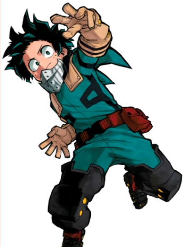
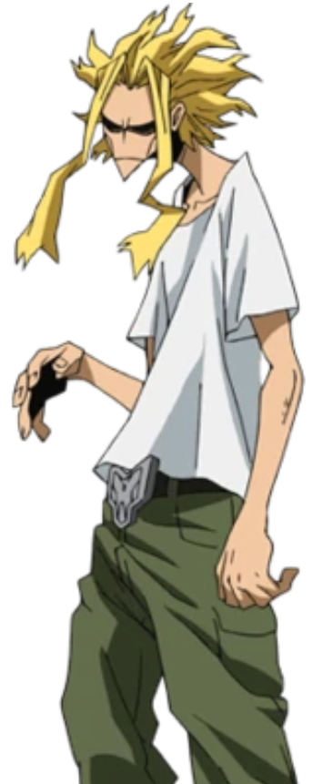
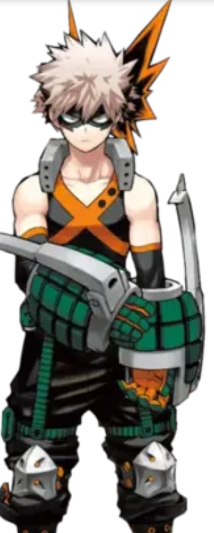
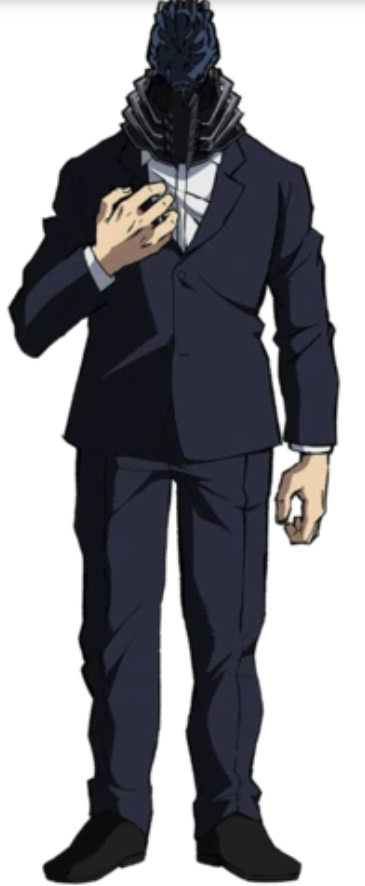
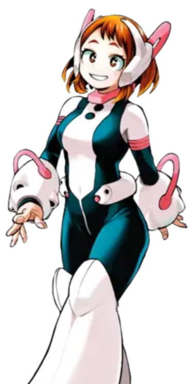
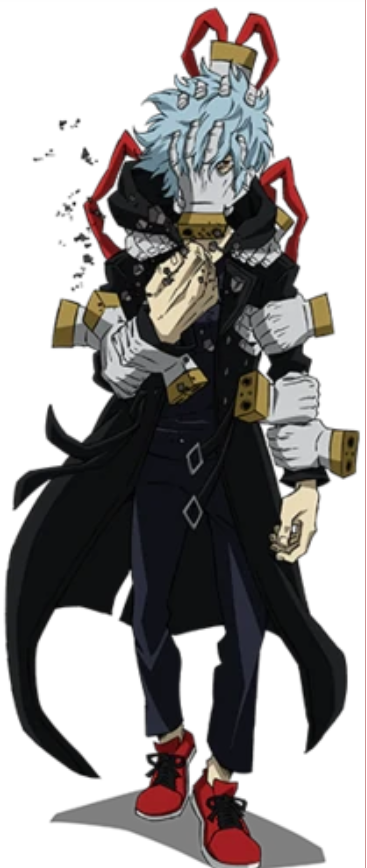

My Hero Academia
Il existe un monde où 80 % de la population possède des super-pouvoirs. Ils sont appelés alter, les héros font partie de la vie quotidienne. Et les super-vilains aussi ! Face à eux se dresse l’invincible All Might, le plus puissant des héros. Le petit Izuku Midoriya alias Deku en est un fan absolu. Il n’a qu’un rêve : entrer à la l'académie des héros pour suivre les traces de son idole. Le problème, c’est qu’il fait partie des 20 % qui n’ont aucun pouvoir... Son destin est bouleversé le jour où sa route croise celle d’All Might en personne ! Ce dernier lui offre une chance inespérée de voir son rêve se réaliser. Pour le jeune Deku, un long chemin avec beaucoup d'entraînement lui est réservé.
Izuku Midoriya
All Might
Katsuki Bakugô
Shôto Todoroki

All For One
Ochaco Uraraka
Tomura Shigaraki
- Liste des arcs :
- -Arc de l'examen d'entrée
- -Arc de test d'appréhension d'alter
- -Arc d'essai de combat
- -Arc USJ
- -UA Arc de la Fête du Sport
- -Arc du tueur de héros
- -Arc des examens finaux
- -Arc du camp d'entraînement forestier
- -Arc de raid de la cachette
- -Arc d'examen de licence de héros provisoire
- -Arc Shie Hassaikai
- -Arc du cours de rattrapage
- -UA Arc du Festival de l'école
- -Arc Pro Héros
- -Arc de formation conjoint
- -Arc méta de l'armée de libération
- -Arc de l'agence Endeavour
- -Arc de guerre de libération paranormale
- -Arc des Evadés du Tartare
- -Arc étoilé et rayé
- -Arc actuel
En savoir plus sur les Arc :Page détaillée
ADN

Netflix
Wakanim